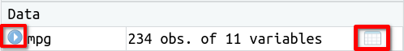

7.3 Hojas de datos
Las hojas de datos (en inglés data frames) son la clase de objetos que se usan en R para almacenar los datos obtenidos en un experimento y poder analizarlos.
Empezaremos explorando la hoja de datos de nombre mpg (miles per gallon), proporcionada por el paquete ggplot2(que ya hemos cargado al cargar el paquete tidyverse). Esta hoja de datos trata sobre el consumo de combustible de diferentes modelos de coches.
Para cargar la hoja de datos mpg en tu espacio de trabajo escribe
data("mpg")Verás que mpg aparece listada en el panel Environment. Inicialmente está catalogada como <Promise>, pero en cuanto hagamos click en esa celda (o escribamos el nombre de la variable para usarla en nuestro código), se completará la carga y podremos leer que tiene \(234\) observaciones de \(11\) variables. Utilizando los iconos que se resaltan en la imagen siguiente, obtenemos más información sobre la hoja de datos.

Presionando el icono de la izquierda, vemos los nombres de las 11 variables y sus valores para las primeras observaciones.
Presionando el icono de la derecha, podremos visualizar la hoja de datos completa. El dato en la celda correspondiente a la fila \(i\) y la columna \(j\) es el valor observado para el coche número \(i\) de la variable número \(j\).
En general, una hoja de datos es una especie de matriz u hoja de cálculo, donde las filas representan unidades experimentales, casos u observaciones (en nuestro ejemplo coches) y las columnas representan variables que describen características de interés de las unidades experimentales (en nuestro caso fabricante, modelo, cilindrada, consumo de combustible …). Las celdas contienen los valores observados para cada variable en cada unidad experimental.
Para obtener una descripción de la hoja de datos, escribe mpg en el campo de búsqueda del panel Help de RStudio. También puedes escribir ?mpg o help(mpg) en la consola, o poner el cursor sobre cualquier punto de la palabra mpg en la instrucción data("mpg") y presionar F1. La página de ayuda explica que la hoja de datos tiene \(234\) filas, donde cada fila representa un coche, y \(11\) variables, que describen diferentes características de los coches. Las variables que utilizaremos después son displ, hwy y class, que nos describen como:
displ: engine displacemente, in litres (cilindrada)hwy: higway miles per gallon (millas recorridas por galón de combustible en conducción por autopista)class: “type” of car
Para extraer las cilindradas (variable displ) de la hoja de datos mpg utilizamos la instrucción siguiente:
mpg$displ [1] 1.8 1.8 2.0 2.0 2.8 2.8 3.1 1.8 1.8 2.0 2.0 2.8 2.8 3.1 3.1 2.8 3.1 4.2
[19] 5.3 5.3 5.3 5.7 6.0 5.7 5.7 6.2 6.2 7.0 5.3 5.3 5.7 6.5 2.4 2.4 3.1 3.5
[37] 3.6 2.4 3.0 3.3 3.3 3.3 3.3 3.3 3.8 3.8 3.8 4.0 3.7 3.7 3.9 3.9 4.7 4.7
[55] 4.7 5.2 5.2 3.9 4.7 4.7 4.7 5.2 5.7 5.9 4.7 4.7 4.7 4.7 4.7 4.7 5.2 5.2
[73] 5.7 5.9 4.6 5.4 5.4 4.0 4.0 4.0 4.0 4.6 5.0 4.2 4.2 4.6 4.6 4.6 5.4 5.4
[91] 3.8 3.8 4.0 4.0 4.6 4.6 4.6 4.6 5.4 1.6 1.6 1.6 1.6 1.6 1.8 1.8 1.8 2.0
[109] 2.4 2.4 2.4 2.4 2.5 2.5 3.3 2.0 2.0 2.0 2.0 2.7 2.7 2.7 3.0 3.7 4.0 4.7
[127] 4.7 4.7 5.7 6.1 4.0 4.2 4.4 4.6 5.4 5.4 5.4 4.0 4.0 4.6 5.0 2.4 2.4 2.5
[145] 2.5 3.5 3.5 3.0 3.0 3.5 3.3 3.3 4.0 5.6 3.1 3.8 3.8 3.8 5.3 2.5 2.5 2.5
[163] 2.5 2.5 2.5 2.2 2.2 2.5 2.5 2.5 2.5 2.5 2.5 2.7 2.7 3.4 3.4 4.0 4.7 2.2
[181] 2.2 2.4 2.4 3.0 3.0 3.5 2.2 2.2 2.4 2.4 3.0 3.0 3.3 1.8 1.8 1.8 1.8 1.8
[199] 4.7 5.7 2.7 2.7 2.7 3.4 3.4 4.0 4.0 2.0 2.0 2.0 2.0 2.8 1.9 2.0 2.0 2.0
[217] 2.0 2.5 2.5 2.8 2.8 1.9 1.9 2.0 2.0 2.5 2.5 1.8 1.8 2.0 2.0 2.8 2.8 3.6que mostrará el vector con las cilindradas de los \(234\) coches.
En general, para extraer una de las variables de una hoja de datos se utiliza el formato <nombre hoja>$<nombre variable>.
Podemos ver los diferentes tipos de coches incluidos en la variable class con
unique(mpg$class)[1] "compact" "midsize" "suv" "2seater" "minivan"
[6] "pickup" "subcompact"El propósito de este apartado era presentar las hojas de datos en R y describir su estructura. En el capítulo Crear hojas de datos veremos cómo crear nuestras propias hojas de datos, bien de forma manual, bien importando los datos de un archivo.